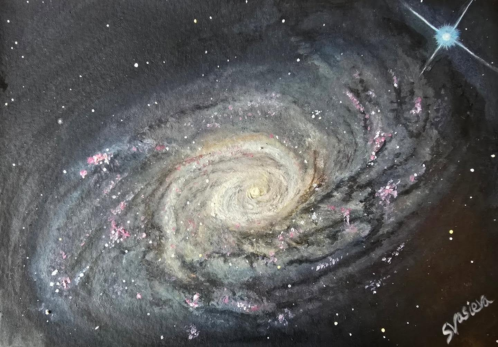

The Sunflower Galaxy (M63)
A watercolour interpretation of the Sunflower Galaxy (M63), a spiral galaxy in Canes Venatici.
This galaxy was one of the first in which a spiral structure was identified, and it's considered a "flocculent" galaxy because its arms are not clearly defined. This is contrary to "grand design" spiral galaxies, which I have painted several of before.